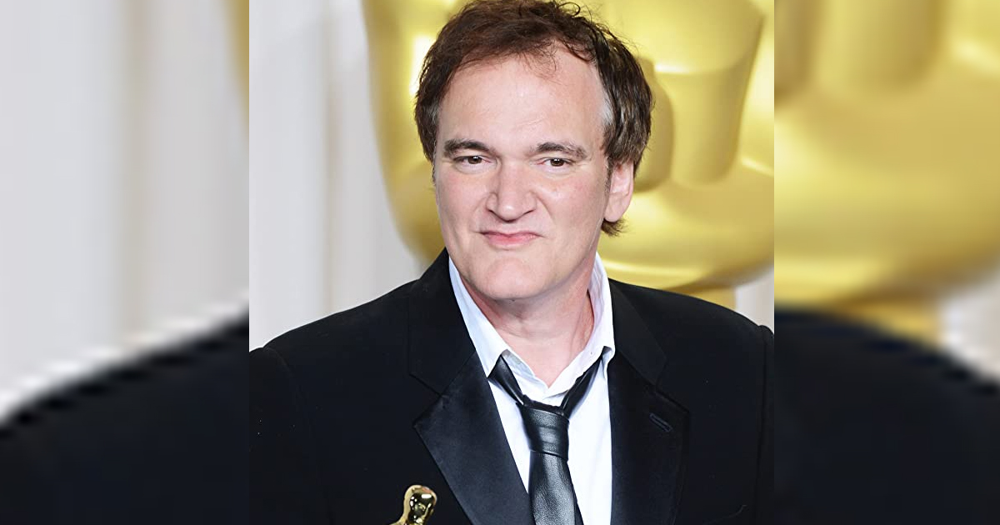

1 / 4
Christopher Edward Nolan is a British-American filmmaker.
Known for his Hollywood blockbusters with complex storytelling, Nolan is considered a leading filmmaker of the 21st century.
Nolan's work regularly feature in the listings of best films of their respective decades.
They are typically characterised by epistemology and existentialism.
Infused with a metaphysical outlook, they explore ethics, the construction of time, and the malleable nature of memory and personal identity.
His work is permeated with mathematically
inspired images and concepts, unconventional narrative structures, practical special effects, experimental soundscapes,
large-format film photography, and materialistic perspectives.
2 / 4

Quentin Jerome Tarantino is an American film director, writer, producer, and actor.
His films are characterized by frequent references to popular culture and film genres, non-linear storylines,
dark humor, stylized violence, extended dialogue, pervasive use of profanity, cameos and ensemble casts.Tarantino's work has been subject to controversy,
such as the depictions of violence, frequent inclusion of racial slurs.
During his career, Tarantino's films have garnered a cult following, as well as critical and commercial success.
He has been considered "the single most influential director of his generation", and listed as one of the most influential people in the world.
3 / 4
James Francis Cameron is a Canadian filmmaker.
A major figure in the post-New Hollywood era, he is considered one of the industry's most innovative filmmakers,
regularly pushing the boundaries of cinematic capability with his use of novel technologies.
Cameron's films have grossed over $8 billion worldwide,
making him the second highest-grossing film director of all time.
Cameron holds the achievement of having directed the first two of the six films in history to gross over $2 billion worldwide.
He is also the only director to have three films grossed over $2 billion worldwide.
In 2010, Time named Cameron as one of the 100 most influential people in the world.
Cameron is also an environmentalist and runs several sustainability businesses.
4 / 4
Steven Allan Spielberg is an American film director, writer and producer.
A major figure of the New Hollywood era and pioneer of the modern blockbuster,
he is the most commercially successful director of all time.
Spielberg’s style of filmmaking is based on three elements: storytelling, character development, and suspense.
Spielberg knows how to tell a story in such a way that it will leave you wanting more after every scene.
❮
❯